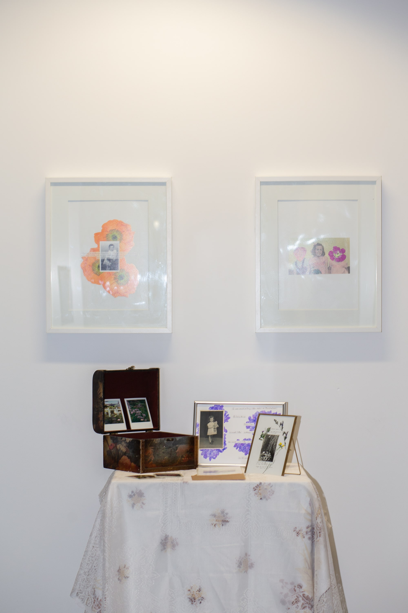

A Garden of Memories (2022)
India Calder-Lowndes
Mixed Media Installation (Floral Box, Frames, Polaroids), Inkjet Prints on Canson Platine Fibre Rag
‘A Garden of Memories’ is centred around childhood imagination and memories, however more importantly it is a tribute to my Nana. A garden is a magical place for a child, full of vibrant colours and fresh smells. Many stories can be created in a garden and allows for a child to get lost in their imagination.
A child’s imagination is an important developmental step in navigating this world that they live in. As we grow up, we can remember these stories that we created, and this holds great nostalgia for us. This series explores childhood innocence from the world’s reality and is light-hearted and playful.

'A Garden of Memories', 2022 (Detail), Image Courtesy the Artist